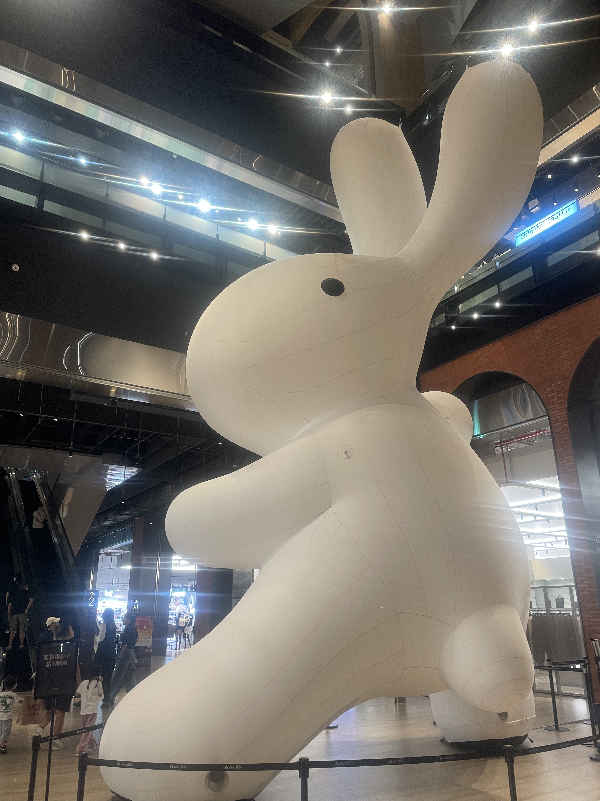
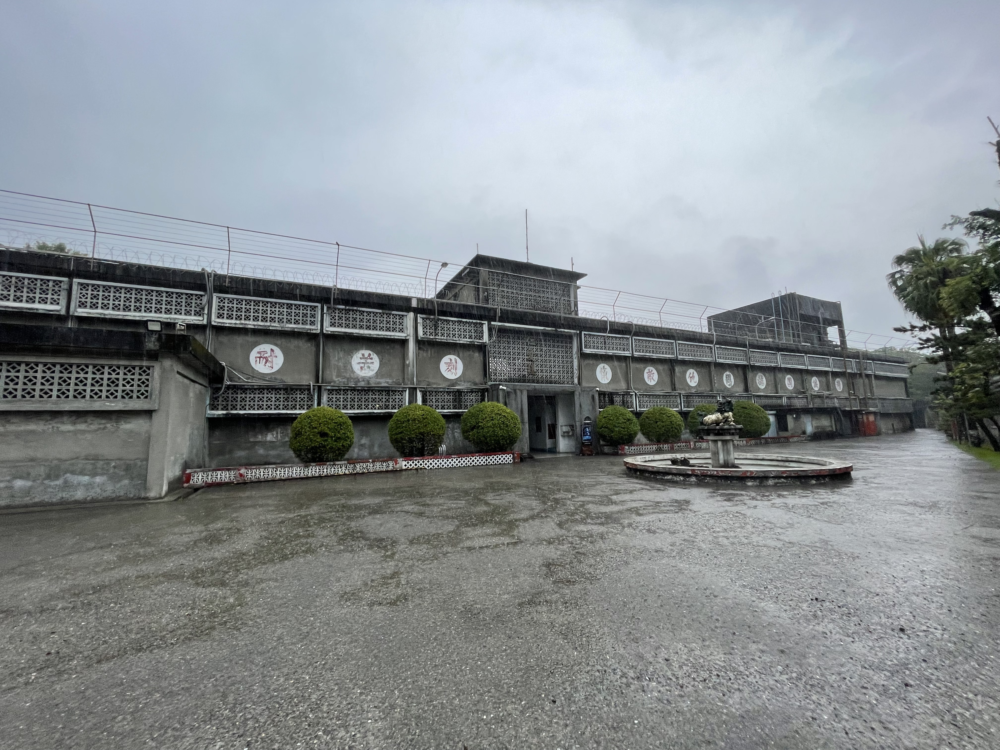
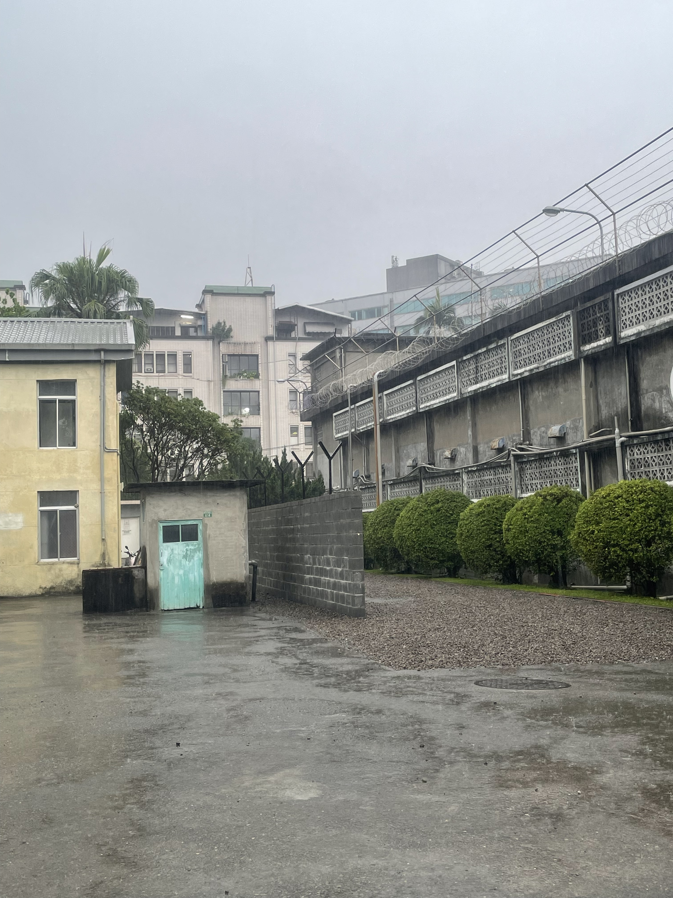
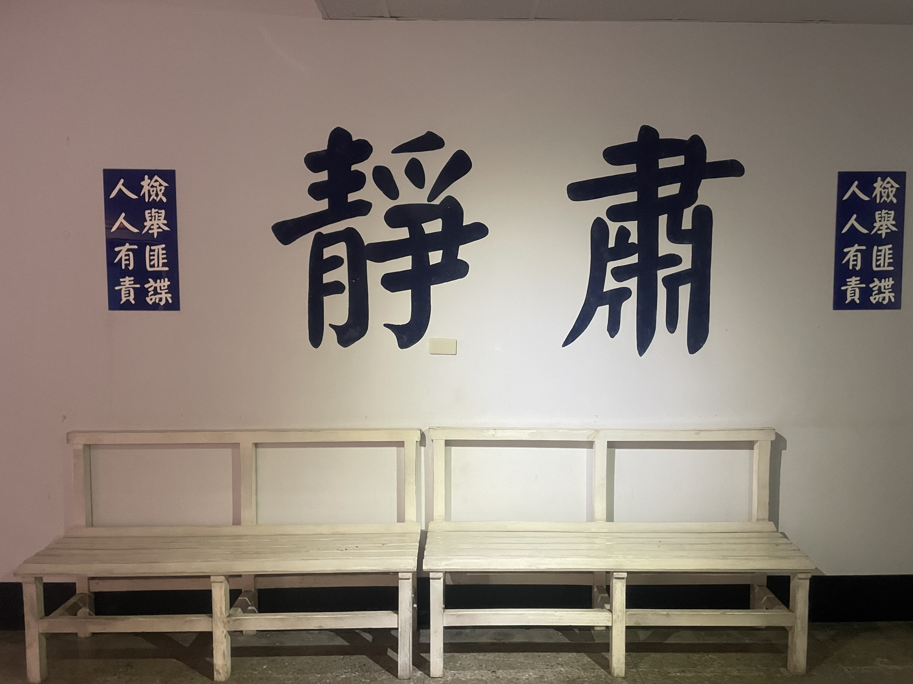
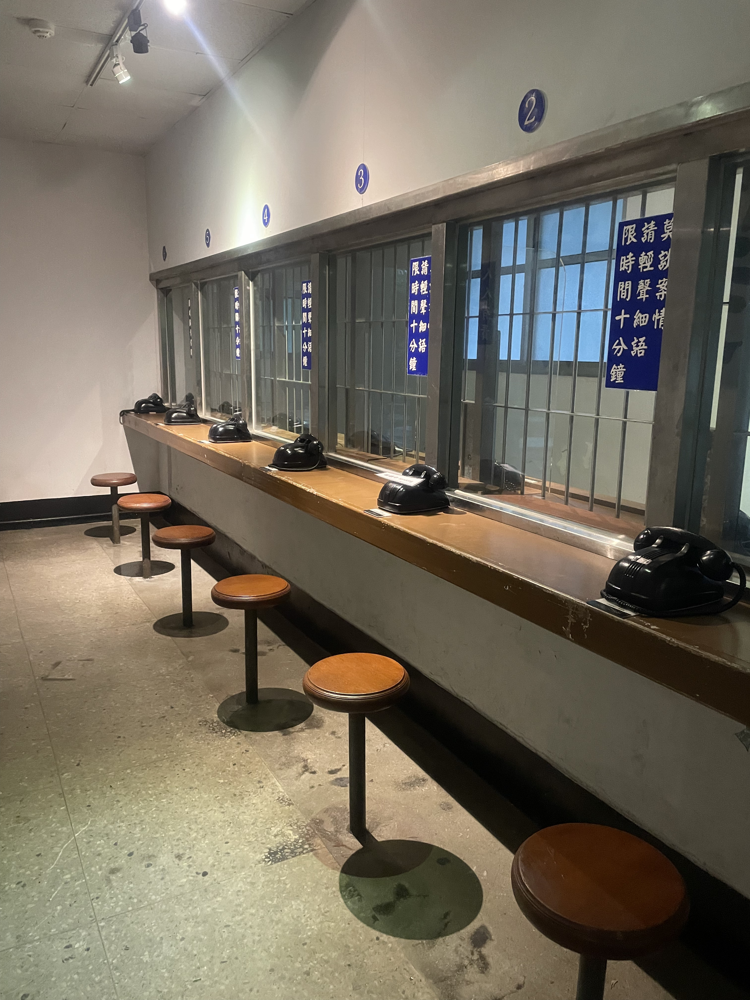
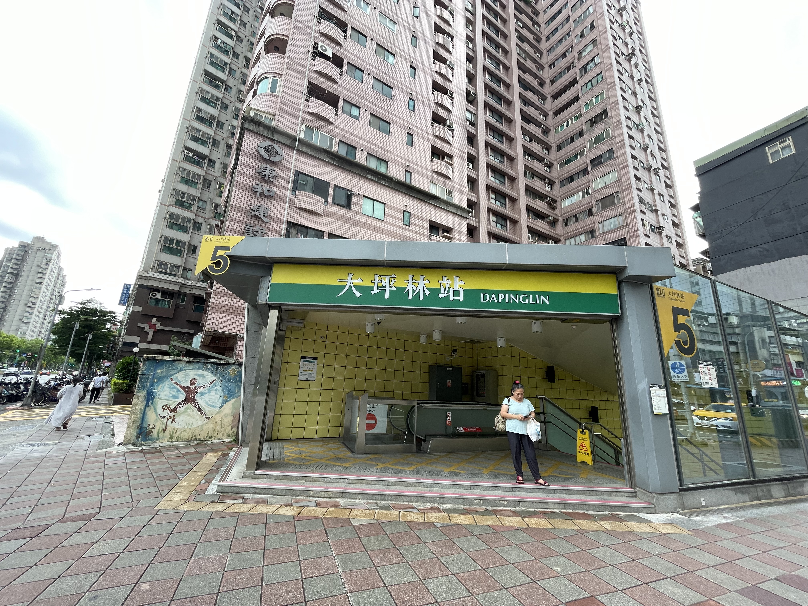

新北市新店區
基本資訊
位於新北市南部，緊鄰台北市文山區與中正區，地形以山區與河谷為主，具有豐富的自然景觀與水岸環境。新店早期以農業為主，但隨著都市擴張與交通改善，逐漸發展為結合住宅、休閒與文化的現代化行政區。 區內以碧潭風景區最為知名，沿新店溪建有吊橋、步道與自行車道，是居民休閒與旅遊的熱門地點。此外，新店擁有完整的生活機能，包括學校、商圈與住宅社區，同時保有山林步道與水岸綠帶，使自然環境與都市生活相互融合。
推薦景點
| 國家人權博物館
成立目的是紀念與研究台灣的近代人權歷史，特別是白色恐怖時期的社會經驗與政治受難者的故事。博物館的設立旨在保存史料、教育公眾，並透過展覽與研究推動人權意識的普及與反思。 博物館展覽內容涵蓋歷史文獻、受難者生活物件、口述歷史以及多媒體互動展示，讓參觀者能從不同角度理解台灣社會的政治變遷與人權發展。館區環境結合歷史建築與現代展館設計，提供靜謐且沉浸的參觀體驗，使歷史敘事得以被完整呈現。
| 裕隆城
是以住宅與商業綜合開發為主的大型社區建築群。該社區規劃完善，建築風格現代，結合住宅大樓、商場與生活機能設施，形成區域內相對完整的生活圈。 社區周邊交通便捷，連結主要道路與大眾運輸系統，使居民出行便利。內部規劃有綠地、廣場與休閒空間，提供住戶休憩與社交活動場所，兼具生活機能與居住舒適度。





